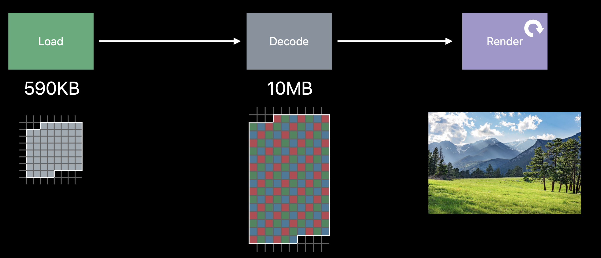
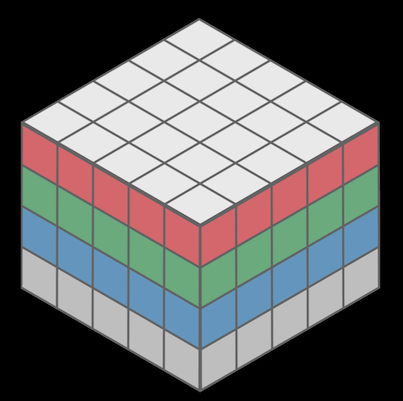
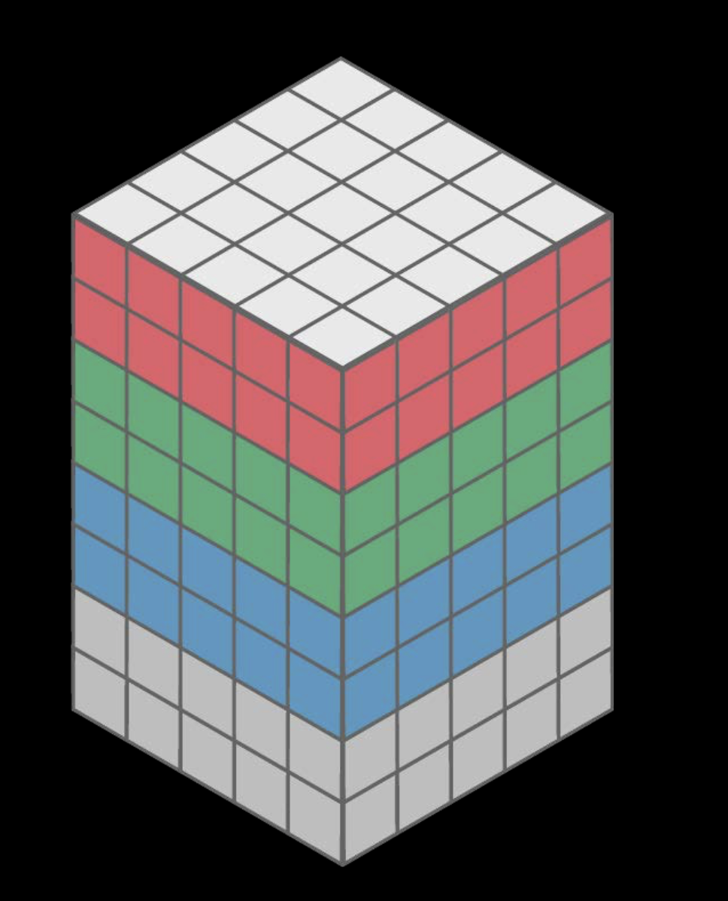
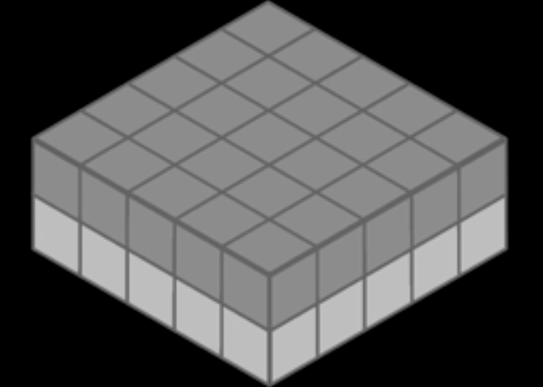
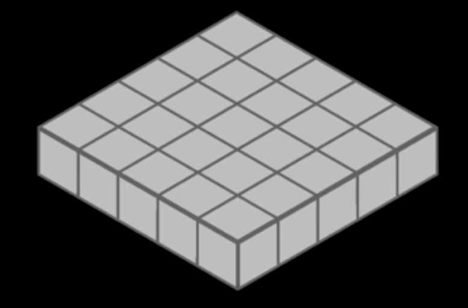
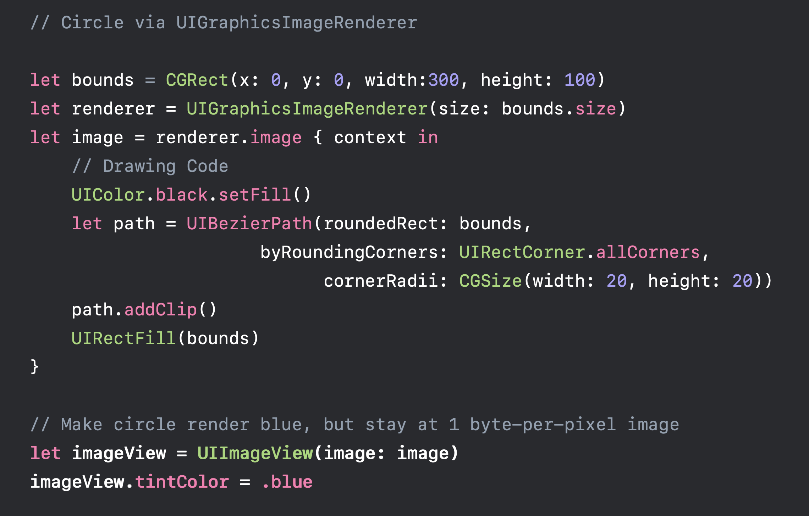
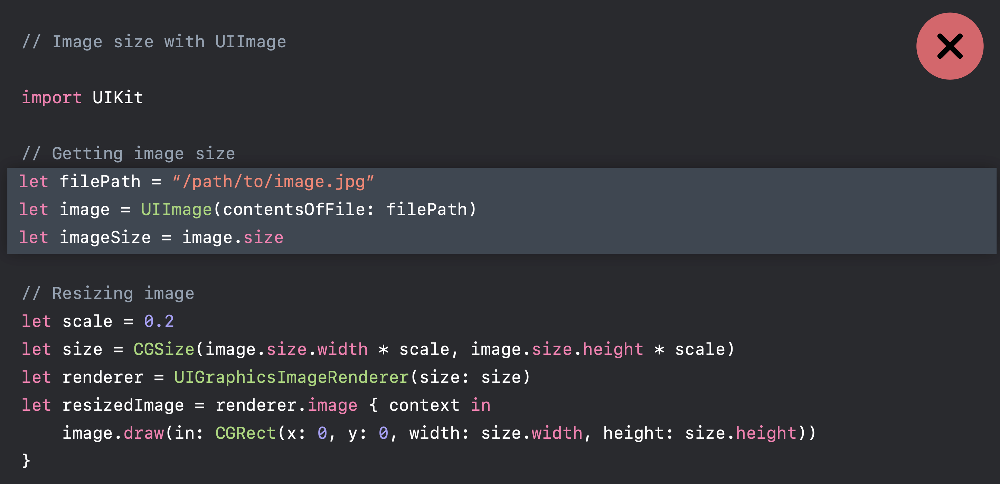
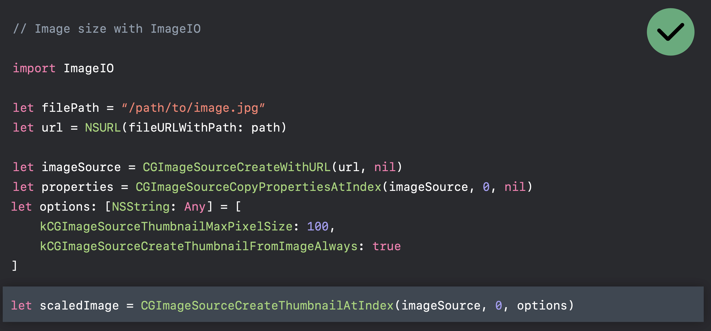

iOS images in memory
Memory is a finite and shared resources in mobile system, while image
Memory use is related to the dimensions of the images, not the file size.
The memory use of an image using sRGB space
Take the following image as an instance, its file size is 590KB, with dimension 2048 x 1536 pixel.
4 byetes for each pixel in RGBA
By this article, each pixel in sRGB image needs 32bit, 4 bytes, in memory when it’s decoded. Because in sRGB, there are Red, Green, Blue 3 channels and Alpha. The range of each channel value is from 0 to 255, which needs 8 bits to represent the value.
1 | A R G B A R G B A R G B |
More memory usage when decoding a image
By this session, a image have load -> decode -> render these 3 phases.

We only need 590KB to load a image, while we need2048 pixels x 1536 pixels x 4 bytes per pixel = 10MB when decoding
Image Rendering Format
SRGB
- 4 bytes per pixel
- full color images
- most common used

Wide format
- 8 bytes per pixel
- super accurate colors. Because they use 8bytes, 16 bits, for each channel. In the meantime, double the image size.
- Only useful with wide color display. We don’t want to use it when we don’t need to.
- Wide color capture cameras since iPhone 7

Luminance and alpha 8 format
This image only holds grayscale value. And the image size is smaller.
- 2 bytes per pixel
- Single-color iamges and alpha
Most used in Metal shaders, not very common.
Alpha 8 Format
1 byte per pixel
- Userful for monochrome images because it uses less memory.
- masks
- Emoji-free text
- 75% smaller than SRGB

We can also change image.tintColor in this image without changing its format.
How do I pick the right format?
UIGraphicsBeginImageContextWithOptions always uses SRGB rendering-format, which use 4 bytes per pixel.
while UIGraphicsImageRenderer, which introduced in iOS 10 will automatically pick the best graphic format in iOS12. It means, you will save 75% of memory by replacing UIGraphicsBeginImageContextWithOptions with UIGraphicsImageRenderer
Do ✅

Use ImageIO to downsample images
UIImage is expensive for sizing and to resizing
- Will decompress original image into memory
- Internal coordinate space transforms are expensive
Don’t ❌

Use ImageIO
ImageIO can read image sizes and metadata information without dirtying memory.
ImageIO can resize images at cost of resized image only.
Do ✅

The bad is that you have to specify some options.
Optimizing when in the background
foreground/background
The strategy is simple, when UIApplicationDidEnterBackground, we unload images; and when UIApplicationWillEnterForeground, load images.
on-screen/off-screen
unload large resource when off-screen, viewDidDisappear; and load large resource when on-screen, viewWillAppear.
Debug
Use memory graphs to further understand and reduce memory footprint
Ref
Author : RY Zheng
Link : https://suelan.github.io/2020/05/03/iOS-images-in-memory/
License :